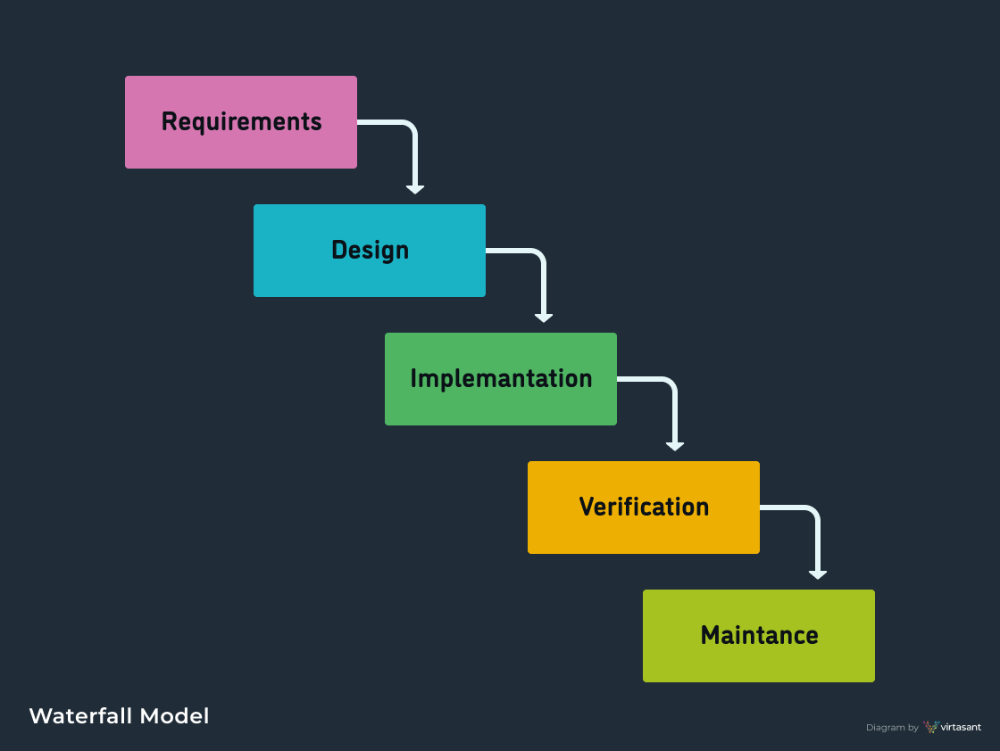

The first known use of such phases in software engineering was held by Herbert D. Benington on 29 June 1956.
Waterfall model is an example of a Sequential model. In this model, the software development activity is divided into different phases and each phase consists of a series of tasks and has different objectives.
Waterfall is broken down into phases, and other modern methodologies can even pull from these phases and utilize them, these phases are:
Requirement Analysis, Planning, Architectural Design, Software Development, Testing, Deployment, Maintenance.
According to the Waterfall method, the software development process goes through all the SDLC phases with no overlapping and consists of a single development cycle.

This model was first described by Barry Boehm in 1986. Spiral model is one of the most important Software Development Life Cycle models, which provides support for Risk Handling. In its diagrammatic representation, it looks like a spiral with many loops. The exact number of loops of the spiral is unknown and can vary from project to project. Each loop of the spiral is called a Phase of the software development process. The exact number of phases needed to develop the product can be varied by the project manager depending upon the project risks. As the project manager dynamically determines the number of phases, so the project manager has an important role to develop a product using the spiral model.
The spiral model has four phases. A software project repeatedly passes through these phases in iterations called Spirals.
The Prototyping Model is one of the most popularly used Software Development Life Cycle
Models (SDLC models).This model is used when the customers do not know the exact project
requirements beforehand. In this model, a prototype of the end product is first developed, tested
and refined as per customer feedback repeatedly till a final acceptable prototype is achieved
which forms the basis for developing the final product.
Agile is the mainstream methodology used in modern software development, and expands its influence beyond coding into many aspects of product development, from ideation to customer experience.
The Agile methodology breaks a project down into multiple cycles, each passing through some or all of the SDLC phases. The focus is on people and how they work together to get the project done. Agile calls for continuous collaboration between team members and stakeholders with regular cycles of feedback and iteration.
In the early 2000s, a small group of software industry leaders met in Snowbird, Utah, to discuss these new methodologies. The term agile software development was coined in 2001 to describe the flexible nature of software developed in iterative stages and became a blanket term for the new methodologies.
The V-Shape model is named after its two key concepts: Validation and Verification. In the Verification Phases, requirements and designs are created. Each Validation Phase has a corresponding Verification Phase, where testing and user acceptance occurs. These two phases are linked together by the Implementation (or coding) phase.
The Iterative methodology was an early precursor to Agile. It emphasized iterative and incremental action. Its earliest reported use was as part of NASA’s Project Mercury in the early 1960s.
With the Iterative Model, only the major requirements are known from the beginning. Based on these, the development team creates a quick and cheap first version of the software. Then, as additional requirements are identified, additional iterations of the software are designed and built. Each iteration goes through all the phases of the SDLC and these cycles are repeated until completion. It was common for the team to work on several SDLC phases at the same time.